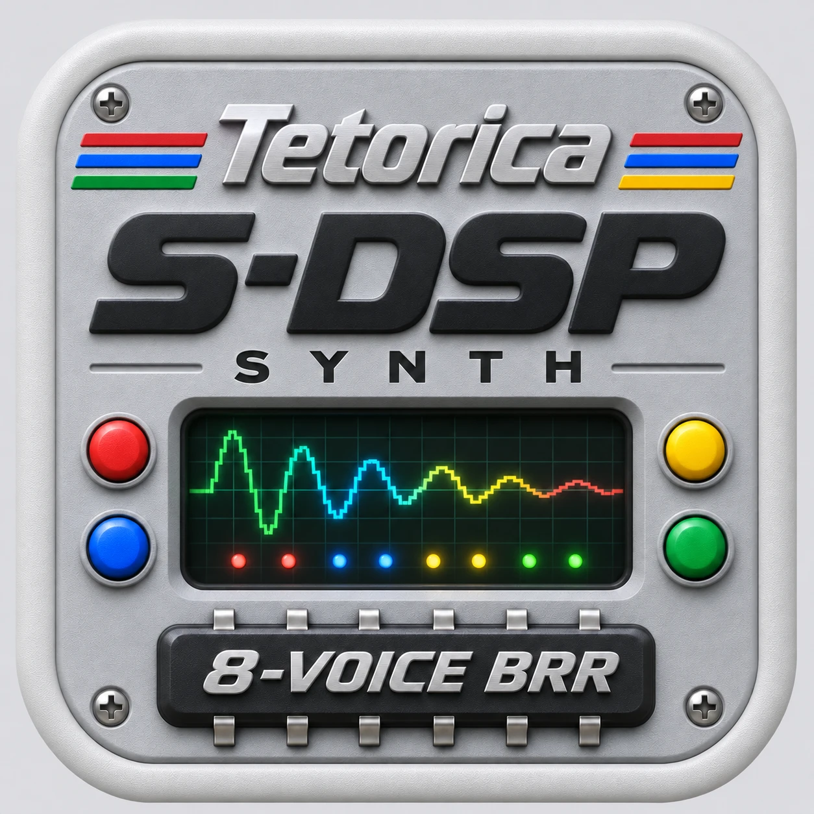

BRR · NOISE · ECHO / FIR · PMON
Tetorica S-DSP Synth
SNES · 8-voice sample sound · Draw a wave. Play with code.
Enable audio, then play the keyboard. Editing does not start audio.
Load SPC from Menu or Sounds from SPC. Loading is silent.
Mixer
Shared source volume and physical channel On / Off for Keyboard, Code and SPC. Master remains the final output level. Muted modulators still drive PMON.
Auto · edit and play
Live output after Master volume.
Sound source
BRR · 8 hardware voices · round robin
Performance input
Every key plays the selected source.
Looper idle.
?
Record the keyboard, then Stop recording or Space to repeat. The first take sets the period; later takes add independent audio layers. Each take keeps live edits, Pitch, PMON and Echo. SPC and existing layers are excluded from recording; Master applies during playback. A 0.25 second release tail wraps into the next cycle. Stop / Start retains layers; Undo removes the latest take, Clear removes all. Up to 16 layers, 120 seconds per take and 128 MiB of retained audio, in this session only. Switching to Code stops the Looper and retains completed layers. Loading a project clears it. Stop all sound and output switching stop it while retaining completed layers.
Software performance · the same S-DSP APU as the controls above. Run: Ctrl/Cmd+Enter · Apply: Ctrl/Cmd+Shift+Enter.
Code is saved in Files. Loading a project never runs it automatically.
Console
?
Use const snes = await useSoundChip("snes"), then await snes.noteOn(CH1, "C4") and await snes.noteOff(CH1). Lanes 0–7 share the keyboard allocator and current Wave / BRR / Noise, PMON and Echo. CH1–CH6 alias lanes 0–5; use 6 and 7 for the final lanes. PMON uses two hardware voices per note. Run starts fresh; Apply keeps context and named loops. Stop releases Code notes and retains your instrument. This performance API differs from Playground's raw channel API.